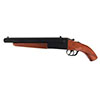
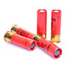
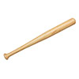
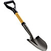

How to Survive the Zombie Apocalypse
There’s nothing worse than being stuck in an impending apocalypse without some crucial essentials on hand. Prepare a survival kit that contains:
- Water
- Food (non-perishable)
- Medication
- First Aid Kit (though it wouldn’t really help if you get infected by the zombie)
- Hygiene (soap, towels, hand sanitizer)
- Utility supplies including batteries, knife, can opener, torches, and matches
Don’t forget to add a phone, keys, enough gas in the car –a tent might help– and the main item that will ensure survival: a weapon. Rifles or shotguns tend to be the weapons of choice, but knives, axes, machetes, shovels, and baseball bats are also effective (though they usually involve getting too close for comfort to the zombies). And for guns, don’t forget the ammo.



